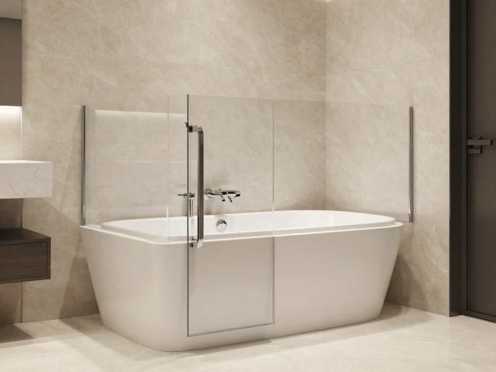

Bathroom fit changes
Layout, movement, or access needs may change over time.

Review replacement options, compare local providers, and request quotes based on layout, comfort priorities, accessibility goals, and the condition of the current setup.
Layout, movement, or access needs may change over time.
Seating, support, or feature preferences may no longer match the current tub.
A newer walk-in tub path may feel more practical than adjusting the old setup.
Homeowners may compare replacement providers based on how clearly bathroom-fit issues are addressed, how comfort and support goals are understood, and how the quote path is framed around the actual project.
SafeBath helps frame accessibility upgrades around the real details that may shape a provider conversation: how the bathroom is used, what support feels important, and what would make daily bathing feel easier.
Grab bars, seated use, balance support, and confidence inside the bathing area.
Entry path, threshold feel, bathroom layout, and how easy the space feels to navigate.
Seat feel, controls, soaking position, and practical use during normal routines.
Local response paths, service-area fit, and which provider options may be relevant.



Use a more structured category-first path before comparing provider responses.
Often when the current setup no longer feels aligned with comfort, access, or layout needs.
Bathroom fit, feature priorities, current tub condition, and local provider availability may all affect quote comparisons.